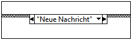
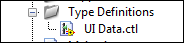
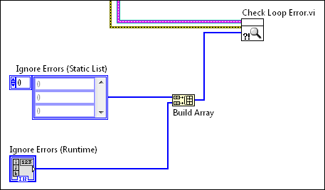

Handler für Nachrichten-Queues
Mit dem Entwurfsmuster zur Verarbeitung von Nachrichten in Queues können mehrere Programmabschnitte parallel ausgeführt und Daten zwischen den Abschnitten ausgetauscht werden. Jeder Programmabschnitt stellt einen Task wie beispielsweise die Erfassung von Daten dar und ist wie ein Zustandsautomat aufgebaut. Dank dieses Designs können Sie jeden Task in Zustände unterteilen.
Der Handler für Nachrichten-Queues ist eine Version des Erzeuger/Verbraucher-Entwurfsmusters, bei dem die Benutzeroberfläche (Erzeuger) Nachrichten erzeugt und die Tasks (Verbraucher) diese verarbeiten. Beim Handler für Nachrichten-Queues können Sie Nachrichten aber auch in der Verbraucherschleife erzeugen.
Diese Vorlage enthält eine Erzeuger- und eine Verbraucherschleife. Sie können je nach Bedarf Verbraucherschleifen hinzufügen.
Systemvoraussetzungen
LabVIEW Base, Full oder Professional Development System
Anwendungsfälle
Der Handler für Nachrichten-Queues eignet sich für Anwendungen mit mehreren parallel ausgeführten Tasks. Nehmen Sie beispielsweise eine Anwendung, mit der kontinuierlich ein RS-232- und ein analoges Signal erfasst, protokolliert und angezeigt wird. Die Signale treten mit verschiedenen Raten auf. Daher muss die Anwendung zwei parallel ausgeführte Schleifen haben. Des Weiteren ist jede Schleife in folgende Zustände unterteilt:
- Initialisieren der DAQ-Hardware
- Erfassen der Daten
- Protokollieren der erfassten Daten
- Anzeigen der erfassten Daten in einem Signalverlaufsdiagramm
- Festlegen eines sicheren Hardwarezustands
- Beenden der Datenerfassung und Herunterfahren der Hardware
Die Anwendung erfordert eine Benutzeroberfläche, die auf Eingriffe reagiert. Benutzer sollten also auf Schaltflächen klicken können, auch wenn die Anwendung einen anderen Befehl ausführt. Daher wird eine dritte parallele Schleife benötigt, die das Frontpanel kontinuierlich auf Ereignisse überwacht. Beispiele wären:
- RS-232-Erfassung starten
- RS-232-Erfassung stoppen
- RS-232-Protokollierung aktivieren
- RS-232-Protokollierung deaktivieren
- Analoge Datenerfassung starten
- Analoge Datenerfassung stoppen
- Protokollierung analoger Daten aktivieren
- Protokollierung analoger Daten deaktivieren
Der Handler für Nachrichten-Queues eignet sich als Vorlage für Anwendungen dieser Art.
Überblick
Diese Vorlage führt folgende Schritte wiederholt aus:
- Ein Benutzer bedient das Frontpanel, woraufhin die Ereignisstruktur in der Schleife zur Ereignisbehandlung eine Nachricht erzeugt. LabVIEW speichert die Nachricht in einer Queue.
- Die Schleife zur Nachrichtenbehandlung liest eine Nachricht und entfernt sie aus der Queue.
- Die Nachricht ist ein String, der einem Unterdiagramm der Case-Struktur in der Schleife zur Nachrichtenbehandlung entspricht. Daher wird nach dem Lesen der Nachricht das dazugehörige Unterdiagramm der Case-Struktur ausgeführt. Dieses Unterdiagramm wird Nachrichtendiagramm genannt, da es sich auf eine Nachricht bezieht.
- Das Nachrichtendiagramm kann eine weitere Nachricht erzeugen, die in der Nachrichten-Queue gespeichert wird.
Hinweise:
- Die Schleife zur Ereignisbehandlung ist die Erzeugerschleife. Die Schleife zur Nachrichtenbehandlung ist die Verbraucherschleife. Diese Schleifen werden parallel ausgeführt und sind durch die Nachrichten-Queue miteinander verbunden.
- Die Nachrichten-Queue ist eine LabVIEW-Queue, in der Nachrichten für die Verarbeitung gespeichert werden. Da die Schleife zur Ereignisbehandlung Nachrichten an diese Queue und nicht direkt an die Schleife zur Nachrichtenbehandlung sendet, kann sie jederzeit Nachrichten erzeugen. Jede Nachricht gehört zu einer Schleife zur Nachrichtenbehandlung.
- Bei jeder Iteration der Schleife wird die älteste Nachricht der Queue gelesen und dann das dazugehörige Nachrichtendiagramm ausgeführt. Die Schleife zur Nachrichtenbehandlung verarbeitet zwar Nachrichten primär, kann aber auch welche erzeugen.
- Jede Schleife verarbeitet Fehler mit Hilfe eines schleifenspezifischen Fehlerbehandler-SubVIs. Wenn der Handler für Nachrichten-Queues in der Schleife zur Nachrichtenbehandlung einen Fehler erkennt, zeigt LabVIEW eine Fehlermeldung an.
- Ihre Anwendung kann mehrere Schleifen zur Nachrichtenbehandlung enthalten. Jede Schleife entspricht einem Task wie die Erfassung oder Protokollierung von Daten.
- Sehen Sie sich den Daten-Cluster im oben abgebildeten Diagramm an. Dieser Cluster enthält Daten, die von jedem Nachrichtendiagramm einer Schleife zur Nachrichtenbehandlung genutzt und bearbeitet werden können. In der Vorlage handelt es sich bei dem Cluster um eine Typdefinition (UI Data.ctl). Jede Typdefinition gehört zu einer Schleife zur Nachrichtenbehandlung.
Ausführen dieser Vorlage
- Starten Sie vom Projekt-Explorer aus das Haupt-VI "Main.vi".
- Klicken Sie auf die Frontpanel-Elemente und sehen Sie sich die vom Element Anzeige ausgegebenen Nachrichten an.
Bearbeiten der Vorlage
Bestimmen Ihrer Bedürfnisse
Die folgende Tabelle fasst Entscheidungen hinsichtlich des Designs zusammen, die bei der Anpassung dieser Vorlage getroffen werden müssen:
| Entscheidung |
Beispiel |
Ausführliche Informationen |
| Sie müssen bestimmen, wie viele Schleifen zur Nachrichtenbehandlung hinzugefügt werden sollen. Jede Schleife definiert einen Task, der zusammen mit anderen Tasks parallel ausgeführt wird. |
Sie haben eine Anwendung, die Daten erfasst und gleichzeitig auf einem Datenträger speichert.
Die Anwendung besteht aus zwei Tasks: Datenerfassung und -protokollierung. Daher benötigen Sie zwei Schleifen zur Nachrichtenbehandlung.
|
Erstellen einer Schleife zur Nachrichtenbehandlung |
Sie müssen für jede Schleife zur Nachrichtenbehandlung bestimmen, welche Nachrichtendiagramme hinzugefügt werden sollen.
Ein Nachrichtendiagramm ist ein Unterdiagramm der Case-Struktur in der Schleife. Jedes Unterdiagramm entspricht einem möglichen Zustand des Tasks. Bestimmen Sie daher die erforderlichen Nachrichtendiagramme basierend auf den Zuständen eines Tasks.
|
Der Task zur Datenerfassung sollte in drei Zustände unterteilt werden: Initialisieren, Datenerfassung und Beenden. Erstellen Sie daher diese Nachrichtendiagramme in der Schleife zur Datenerfassung.
Der Task zur Datenprotokollierung sollte in drei Zustände unterteilt werden: Initialisieren, Protokollieren und Schließen. Erstellen Sie daher diese Nachrichtendiagramme in der Schleife zur Datenprotokollierung.
|
Erstellen eines Nachrichtendiagramms |
| Sie müssen bestimmen, welche Daten von den Nachrichtendiagrammen einer Schleife zur Nachrichtenbehandlung benötigt werden. |
Jedes Nachrichtendiagramm der Datenerfassungsschleife muss auf eine Hardwarereferenz zugreifen können. Diese Referenz muss vom Initialisierungsdiagramm geöffnet werden. Das Datenerfassungsdiagramm erfasst mithilfe der Referenz Daten und das Beendendiagramm schließt die Referenz. |
Festlegen der Daten für eine Schleife zur Nachrichtenbehandlung |
| Sie müssen bestimmen, wann ein Nachrichtendiagramm ausgeführt werden soll. Ein Nachrichtendiagramm wird ausgeführt, nachdem die Schleife zur Nachrichtenbehandlung die dazugehörige Nachricht erhalten hat. Sie müssen also festlegen, wann die einzelnen Nachrichten an die Schleife gesendet werden sollen. Nachrichten können vom Frontpanel oder von einem Nachrichtendiagramm aus gesendet werden. |
Sie sollten eine Schaltfläche hinzufügen, über die die Initialisierungsnachricht an die Datenerfassungsschleife gesendet wird.
Dann muss das Initialisierungsdiagramm die Datenerfassungsnachricht an dieselbe Schleife senden.
|
Hinzufügen eines Elements für das Senden einer Nachricht an eine Schleife zur Nachrichtenbehandlung oder Senden einer Nachricht an eine Schleife zur Nachrichtenbehandlung. |
| Sie müssen bestimmen, ob die Beendennachricht alle Schleifen zur Nachrichtenbehandlung stoppen soll. Das VI "Dequeue Message" (Nachricht aus Queue entfernen) verwendet diese Nachricht, da es eine Schleife zur Nachrichtenbehandlung beenden kann. |
Alle Schleifen zur Nachrichtenbehandlung sollen mit einer Stoppnachricht beendet werden. |
Ändern der Nachricht, mit der eine Schleife zur Nachrichtenbehandlung beendet wird |
| Sie können entscheiden, ob bestimmte Fehler in der Schleife zur Ereignisbehandlung oder der Schleife zur Nachrichtenbehandlung ignoriert werden sollen. |
So könnten Sie z. B. festlegen, dass Fehler aufgrund von Netzwerk-Timeouts beim Lesen von Nachrichten aus der Queue ignoriert werden sollen. |
Ignorieren von Fehlern in der Schleife zur Ereignisbehandlung oder der Schleife zur Nachrichtenbehandlung |
Erstellen einer Schleife zur Nachrichtenbehandlung
Eine Schleife zur Nachrichtenbehandlung stellt einen Task dar (z. B. Datenerfassung oder -protokollierung), der in der Anwendung parallel zu anderen Tasks ausgeführt wird. Jede Schleife kann in Unter-Tasks aufgeteilt werden, die sich auf Zustände beziehen. Schleifen zur Nachrichtenbehandlung bestehen aus folgenden Komponenten:
- Nachrichten-Queue
- While-Schleife, die Nachrichten aus der Nachrichten-Queue liest
- Case-Struktur mit einem Unterdiagramm (Nachrichtendiagramm) für jede mögliche Nachricht, die gelesen werden kann. Jede Nachricht entspricht einem Zustand des Tasks.
- (Optional) Daten, auf die jedes Nachrichtendiagramm der Schleife zugreifen kann
Gehen Sie zum Hinzufügen einer Schleife zur Nachrichtenbehandlung wie folgt vor:
- Diese Vorlage enthält eine Typdefinition, die den Cluster mit den Referenzen für alle Nachrichten-Queues definiert. Standardmäßig enthält diese Typdefinition nur eine Queue. Gehen Sie zum Hinzufügen einer zweiten Queue wie folgt vor:
- Öffnen Sie im Projekt-Explorer das VI "Message Queue.lvlib:Create All Message Queues.vi".
- Klicken Sie mit der rechten Maustaste auf die Konstante Alle Nachrichten-Queues und öffnen Sie die Typdefinition:
LabVIEW startet den Element-Editor.
- Vergrößern Sie den Cluster Nachrichten-Queues.
- Kopieren Sie die Queue-Referenz UI im Cluster.
- Geben Sie einen neuen Namen für die Queue-Referenz ein. Zum Beispiel:
- Wählen Sie Datei»Änderungen übernehmen und schließen Sie den Element-Editor. Die Typdefinition Nachrichten-Queues enthält nun eine weitere Nachrichten-Queue.
- Bearbeiten Sie das VI "Create All Message Queues", so dass es folgende Schritte ausführen kann:
- Anfordern der Nachrichten-Queue-Referenz
- Bündeln der Queue im Cluster Nachrichten-Queues (Ausgang)
- (Optional) Senden einer Anfangsnachricht an die neue Schleife.
Der folgende Screenshot zeigt Beispielprogrammcode für die eben erwähnten Aufgaben:
- (Optional) Wenn die Schleife auf Daten zugreifen muss, erstellen Sie eine entsprechende Typdefinition.
- Erstellen Sie im VI "Main.vi" die Schleife zur Nachrichtenbehandlung für den Task:
Hinweise:
- In Schritt 2 wurde die Queue-Referenz Neuer Task im Cluster Nachrichten-Queues (Ausgang) gebündelt. Der abgebildete Programmcode zeigt, wie der Cluster aufgeschlüsselt und die Queue Neuer Task mit der Schleife Neuer Task verbunden wird.
- In Schritt 2 bestand die Option, eine Anfangsnachricht an die Nachrichten-Queue zu senden. Der Code in Schritt 2 zeigt die Anfangsnachricht Initialize. Der hier abgebildete Code zeigt das Nachrichtendiagramm (Initialize), das bei Empfang dieser Nachricht ausgeführt wird.
- In Schritt 4 bestand die Option, eine Typdefinition zu erstellen. Der abgebildete Programmcode zeigt, wie Sie die Typdefinition Daten für neuen Task verbinden, so dass sie von der Schleife benutzt werden kann.
- Wenn der neue Task Nachrichten an die UI-Queue senden soll, verbinden Sie die UI-Queue-Referenz mit der Schleife Neuer Task.
- Im abgebildeten Diagramm ist die False-Konstante mit dem Bedingungsanschluss der While-Schleife verbunden. Jede Schleife sollte nur von einem Nachrichtendiagramm angehalten werden können. Auf diese Weise wird ein unbeabsichtigtes oder unvollständiges Beenden verhindert, da
- der Programmcode zum Beenden erst kurz vor Beenden der Schleife ausgeführt wird.
- der Programmcode zum Beenden immer vollständig ausgeführt wird.
- Wandeln Sie jede Schleife in ein SubVI um, so dass das Blockdiagramm des VIs "Main.vi" kompakt und übersichtlich bleibt. Des Weiteren können Sie alle SubVIs sowie dazugehörige Hilfs-VIs und Typdefinitionen in einer Projektbibliothek speichern. Das Projekt "Kontinuierliche Messung und Protokollierung" ist ein Beispiel dafür, wie Sie diese Vorlage anpassen können. Öffnen Sie das Beispielprojekt über das Dialogfeld Projekt erstellen.
- Die oben abgebildete Schleife muss nicht mit dem Stoppereignis verbunden werden. Die Schleife der Vorlage führt über die Verbindung "Stop Event" das VI "Fire User Event - Stop" aus, mit dem die Schleife zur Ereignisbehandlung beendet wird. Dieser Vorgang muss von keiner anderen Schleife ausgeführt werden.
- Fügen Sie Nachrichtendiagramme in die Case-Struktur der Schleife zur Nachrichtenbehandlung ein. Um Fehler und unerwartetes Verhalten auszuschließen, sollte jede Schleife folgende Nachrichtendiagramme enthalten:
- Ein Nachrichtendiagramm für die Initialisierung des Tasks. Das Diagramm könnte beispielsweise eine Verbindung zu Hardware herstellen, Dateien für die Datenprotokollierung öffnen usw.
- Ein Nachrichtendiagramm, das unbekannte Nachrichten verarbeitet.
- Ein Nachrichtendiagramm, das bei Ausführung die Nachrichten-Queue freigibt und die Schleife stoppt. Zum Beispiel:
Per Voreinstellung wird das Diagramm mit der Nachricht Exit ausgelöst. Sie können diese Einstellung aber ändern.
- (Optional) Wenn eine Schleife zur Nachrichtenbehandlung einen Task nicht mehr ausführen aber trotzdem geöffnet bleiben soll (um den Task eventuell neu zu starten), erstellen Sie ein Nachrichtendiagramm, das mit der Funktion "Queue leeren" ausstehende Nachrichten löscht .
In einer Anwendung für kontinuierliche Messungen gibt es beispielsweise die Schaltflächen Messung starten und Messung beenden. Durch Klicken auf Messung starten wird die Schleife gestartet. Die kontinuierliche Ausführung erfolgt durch wiederholtes Senden derselben Nachricht an sich selbst. Wenn Sie in dieser Anwendung auf Messung beenden klicken, sollte die Messung gestoppt, die Nachrichten-Queue geleert und die Schleife nicht beendet werden. Wenn Sie die Nachrichten-Queue nicht leeren, löst das Klicken auf Messung beenden keinerlei Ereignis aus. Die Nachrichten-Queue enthält Nachrichten zum Fortsetzen der Messung und jede dieser Nachrichten löst eine weitere Nachricht mit demselben Inhalt aus.
- Fügen Sie der Schleife zur Ereignisbehandlung Programmcode hinzu, mit dem die neue Schleife zur Nachrichtenbehandlung bei einem Fehler oder bei Beenden der Anwendung gestoppt wird. Es soll also das in Schritt 5c erstellte Nachrichtendiagramm ausgeführt werden. Fügen Sie den Code der Ereignisstruktur und dem Fehler-Case hinzu, siehe Abbildung:
- Senden Sie Nachrichten an die Schleife.
Erstellen eines Nachrichtendiagramms
Ein Nachrichtendiagramm ist das Unterdiagramm einer Case-Struktur in einer Schleife zur Nachrichtenbehandlung, das eine bestimmte Nachricht verarbeitet. Es ähnelt einem Zustand im Zustandsautomaten.
Ein Nachrichtendiagramm ist ein Unterdiagramm in einer Case-Struktur, das mit einem String beschriftet ist. Es wird ausgeführt, wenn die Schleife zur Nachrichtenbehandlung eine Nachricht empfängt, die dieser Beschriftung entspricht.
Ein Nachrichtendiagramm wird auf folgende Weise erstellt:
- Fügen Sie der Case-Struktur in der Schleife zur Nachrichtenbehandlung, die den Task darstellt, ein Unterdiagramm hinzu.
| Hinweis Wenn Sie der Schleife dieser Vorlage ein Nachrichtendiagramm hinzufügen, können Sie den Case "---Copy This Frame---" kopieren, um die vorhandenen Daten- und Fehlerverbindungen zu übernehmen. |
- Geben Sie im Case-Selektor den Namen der Nachricht ein, die dieses Unterdiagramm auslösen soll. So wird beispielsweise das folgende Nachrichtendiagramm ausgeführt, wenn LabVIEW den String Neue Nachricht aus der Nachrichten-Queue liest:

- Fügen Sie Programmcode ein, der nach Empfang dieser Nachricht ausgeführt werden soll. Beachten Sie dabei folgende Richtlinien:
- Verwenden Sie für den Zugriff und die Bearbeitung von Task-Daten die Funktionen "Nach Namen aufschlüsseln" und "Nach Namen bündeln":
- Um sicherzustellen, dass keine Fehler unbeachtet bleiben, sollten Sie mit der Funktion "Fehler zusammenfassen" Fehler aller Funktionen im Unterdiagramm zusammenfassen.
- Verbinden Sie den Eingangstunnel Nachrichtendaten mit der Funktion "Variant nach Daten", um auf Nachrichtendaten zugreifen zu können:
- Senden Sie mit dem VI "Enqueue Message" Nachrichten an eine Nachrichten-Queue.
- Senden Sie eine Nachricht an die Schleife, um das Nachrichtendiagramm auszuführen. Die Nachricht muss der Beschriftung des Diagramms entsprechen, die Sie in Schritt 2 festgelegt haben.
Festlegen der Daten für eine Schleife zur Nachrichtenbehandlung
In der Vorlage ist UI Data.ctl die Typdefinition mit den Daten, auf welche die Schleife zur Nachrichtenbehandlung Zugriff hat:

Passen Sie diese Typdefinition Ihrer Anwendung an. Fügen Sie der Typdefinition beispielsweise ein boolesches Element hinzu, wenn mehrere Nachrichtendiagramme in einer Schleife dasselbe boolesche Element bearbeiten müssen.
Bei mehreren Schleifen müssen Sie für jede Schleife eine Typdefinition erstellen. Auf diese Weise werden Fehler verhindert, da eine Schleife nicht auf die Daten von anderen Schleifen zugreifen kann.
Hinzufügen eines Elements für das Senden einer Nachricht an eine Schleife zur Nachrichtenbehandlung
- Fügen Sie ein Element auf dem Frontpanel ein.
- (Optional) Wenn ein Nachrichtendiagramm dieses Element programmatisch bearbeiten soll, bündeln Sie die Elementreferenz in der Typdefinition für diese Schleife.
- Fügen Sie der Ereignisstruktur der Schleife zur Ereignisbehandlung einen Ereignis-Case hinzu.
- Konfigurieren Sie das Ereignis so, dass es ausgelöst wird, wenn sich der Wert der neuen Schaltfläche ändert:
- Klicken Sie auf OK. LabVIEW erstellt einen Ereignis-Case in der Ereignisstruktur.
- Ziehen Sie den Blockdiagrammanschluss des neuen Elements in den Ereignis-Case.
- Fügen Sie dem Case Programmcode hinzu, mit dem eine Nachricht an eine Schleife gesendet wird.
Senden einer Nachricht an eine Schleife zur Nachrichtenbehandlung
Nachrichten sind Strings, die eine Schleife zur Ausführung eines Nachrichtendiagramms anweisen. Sie werden von der Schleife zur Ereignisbehandlung erstellt und in der Nachrichten-Queue gespeichert. Bei jeder Iteration der Schleife zur Nachrichtenbehandlung wird die älteste Nachricht der Queue gelesen und dann das dazugehörige Nachrichtendiagramm ausgeführt.
Gehen Sie zum Senden einer Nachricht an eine Schleife wie folgt vor:
- Entscheiden Sie, welcher Teil der Anwendung die Nachricht an welche Schleife senden soll. Nachrichten können von der Schleife zur Ereignisbehandlung oder von einem Nachrichtendiagramm gesendet werden.
- Entscheiden Sie, welches Nachrichtendiagramm nach Empfang der Nachricht ausgeführt werden soll. Stellen Sie sicher, dass es das Diagramm gibt und es den gleichen Namen wie die Nachricht hat, die gesendet werden soll. Wenn das Diagramm noch nicht vorhanden ist, erstellen Sie es.
- Bestimmen Sie im VI "Main" die Verbindung, die die Nachrichten-Queue der empfangenden Schleife darstellt. Greifen Sie auf die Verbindung zu, indem Sie den Cluster Nachrichten-Queues (Ausgang) aufschlüsseln. Dieser Cluster wird vom VI "Create All Message Queues" ausgegeben. "Main.vi" enthält bereits den folgenden Code, der die UI-Queue-Referenz aufschlüsselt:
Erweitern Sie die Funktion "Nach Namen aufschlüsseln", um auf die Verbindungen der Nachrichten-Queues für alle Schleifen zur Nachrichtenbehandlung zuzugreifen.
- Erstellen Sie in dem Abschnitt der Anwendung, in dem die Nachricht gesendet werden soll, folgenden Programmcode:
Nachricht ist der Text, der dem in Schritt 2 festgelegten Nachrichtendiagramm entspricht. "Nachrichten-Queue (Referenz)" ist die in Schritt 3 festgelegte Verbindung.
 | Hinweis Sie können auf das VI "Enqueue Message" vom Projekt-Explorer aus oder über die Schnelleinfügeliste zugreifen. |
- (Optional) Wenn die Nachricht eine hohe Priorität haben soll, verbinden Sie eine TRUE-Konstante mit dem Eingang Nachricht mit Priorität? des VIs "Enqueue Message":
Nachrichten mit hoher Priorität sind in der Regel für Notstoppsituationen reserviert. Diese Nachrichten werden an den Anfang der Nachrichten-Queue eingefügt. So wird garantiert, dass die Nachricht als nächstes verarbeitet wird.
- (Optional) Senden Sie Daten mit der Nachricht, indem Sie einen Wert mit dem Eingang Nachrichtendaten des VIs "Enqueue Message" verbinden. Dieser Anschluss akzeptiert alle Datentypen. Mit dem folgenden Programmcode wird z. B. eine Fließkommazahl doppelter Genauigkeit zusammen mit der Nachricht gesendet:
LabVIEW zeigt einen Typumwandlungspunkt am Anschluss an, da der Anschluss vom Typ Variant ist.
Ändern der Nachricht, mit der eine Schleife zur Nachrichtenbehandlung beendet wird
Nachrichten sind Strings, die nach Bedarf erstellt und geändert werden können, ohne eine Typdefinition aktualisieren zu müssen. Die Nachricht Exit dieser Vorlage ist aber im VI "Message Queue.lvlib:Dequeue Message.vi definiert":
Wenn Ihre Schleifen nach Empfang einer anderen als die Exit-Nachricht beendet werden sollen, ändern Sie dieses VI.
Verarbeiten unbekannter Nachrichten
Stellen Sie sicher, dass alle Case-Strukturen in Schleifen zur Nachrichtenbehandlung ein Standard-Nachrichtendiagramm enthalten. Der Code in diesem Diagramm wird ausgeführt, wenn Schleifen eine Nachricht lesen, die kein dazugehöriges Nachrichtendiagramm hat. Standard-Nachrichtendiagramme sind wichtig, da Nachrichten Strings sind, die man während der Programmierung eingibt, und keine Enum-Werte, die ausgewählt werden.
Ignorieren von Fehlern in der Schleife zur Ereignisbehandlung und der Schleife zur Nachrichtenbehandlung
Um eine Liste von Fehlern festzulegen, die in der Schleife zur Ereignisbehandlung oder in der Schleife zur Nachrichtenbehandlung vom jeweiligen Ereignisbehandlungs-SubVI ignoriert werden sollen, gehen Sie wie folgt vor:
- Öffnen Sie im Projekt-Explorer das VI "Error Handler - Event Handling Loop.vi" oder "Error Handler - Message Handling Loop.vi" (je nachdem, für welche Schleife der Fehler ignoriert werden soll) und wechseln Sie zum Blockdiagramm.
- Suchen Sie die Array-Konstante mit der Beschriftung Fehler ignorieren (statische Liste):

Fügen Sie die Fehlercodes der entsprechenden Fehler in das Array ein. Geben Sie pro Array-Element einen Fehlercode an. Die zu ignorierenden Fehler hängen von Ihrer Anwendung ab. Wenn Sie beispielsweise die Queue über ein Netzwerk lesen, sollten eventuell Timeout-Fehler verworfen werden.
Sie können auch festlegen, dass Fehler dynamisch während der Ausführung ignoriert werden soll, indem Sie ein Array-Bedienelement mit dem Eingang Fehler ignorieren (Runtime) des Fehlerbehandler-SubVIs verbinden. Geben Sie pro Array-Element einen Fehlercode an.
Alle Fehler, die Sie nicht angegeben haben, werden wie reguläre Fehler behandelt. LabVIEW übermittelt reguläre Fehler in Form von Fehlernachrichten an die Schleife zur Nachrichtenbehandlung, und dort wird wie jeweils angegeben mit dem Fehler verfahren.
Aktivieren der programmatischen Bearbeitung von Elementen durch eine Schleife zur Nachrichtenbehandlung
Wenn eine Schleife ein Element programmatisch bearbeiten soll, erstellen Sie eine Referenz auf das Element und bündeln Sie es in der Typdefinition, mit der Daten für die Schleife gespeichert werden. Im Folgenden wird "UI Data.ctl" als Beispel verwendet.
- Erstellen Sie eine Elementreferenz und verschieben Sie diese in das Unterdiagramm "Initialize" der Schleife.
- Öffnen Sie "UI Data.ctl" und vergrößern Sie den Cluster für die Referenz.
- Erweitern Sie im Unterdiagramm "Initialize" diesen neuen Anschluss an der Funktion "Nach Namen bündeln" und verbinden Sie die Elementreferenz damit:
Die Referenz auf dieses Element ist jetzt für alle Nachrichtendiagramme verfügbar, die Zugriff auf "UI Data.ctl" haben. Der folgende Programmcode zeigt beispielsweise das Nachrichtendiagramm "Deaktivieren-Schaltfläche", das mit der Elementreferenz die Frontpanel-Schaltfläche deaktiviert und ausgraut.
Weitere Informationen
In der LabVIEW-Hilfe, die in LabVIEW über Hilfe»LabVIEW-Hilfe geöffnet wird, finden Sie weitere Informationen zu den Objekten dieser Vorlage und den in dieser Vorlage angewendeten Architekturen. Sie können auch die Kontexthilfe zu Hilfe nehmen, um wichtige Informationen zu den einzelnen LabVIEW-Objekten erhalten, wenn Sie Ihren Cursor über die Objekte bewegen. Zum Öffnen der Kontexthilfe von LabVIEW wählen Sie Hilfe»Kontexthilfe anzeigen.
Das Projekt "Kontinuierliche Messung und Protokollierung" ist ein Beispiel dafür, wie Sie diese Vorlage für eine Messanwendung anpassen können. Öffnen Sie das Beispielprojekt über das Dialogfeld Projekt erstellen.
Auf ni.com erhalten Sie eine Anleitung für diese Vorlage.
Rechtliche Hinweise
Copyright
© 2014 National Instruments. Alle Rechte vorbehalten.
Gemäß den Bestimmungen des Urheberrechts darf diese Publikation ohne vorherige schriftliche Zustimmung der Firma National Instruments Corporation weder vollständig noch teilweise vervielfältigt oder verbreitet werden, gleich in welcher Form, ob elektronisch oder mechanisch. Das Verbot erfasst u. a. das Fotokopieren, das Aufzeichnen, das Speichern von Informationen in Informationsgewinnungssystemen sowie das Anfertigen von Übersetzungen gleich welcher Art.
National Instruments achtet das geistige Eigentum anderer und fordert seine Nutzer auf, dies ebenso zu tun. Die Software von National Instruments ist urheberrechtlich und durch andere Rechtsvorschriften zum Schutz geistigen Eigentums geschützt. Wenn Sie Software von National Instruments nutzen, um Software oder andere Materialien, die im Eigentum Dritter stehen, zu vervielfältigen, dürfen Sie Software von National Instruments nur insoweit nutzen, als Sie die betreffenden Materialien nach den jeweils anwendbaren Lizenzbestimmungen oder Rechtsvorschriften vervielfältigen dürfen.
Lizenzverträge von National Instruments und Rechtshinweise von Drittanbietern
Lizenzverträge (EULAs) von National Instruments und Rechtshinweise von Drittanbietern befinden sich in folgenden Verzeichnissen:
- Rechtshinweise: <National Instruments>\_Legal Information und <National Instruments>.
- EULAs: <National Instruments>\Shared\MDF\Legal\license
- Informationen zum Hinzufügen von Rechtshinweisen zu Installationsprogrammen, die mithilfe von NI-Produkten erzeugt werden: <National Instruments>\_Legal Information.txt
Eingeschränkte Rechte der US-Regierung
Für Behörden, Regierungsstellen oder andere Rechtsträger der US-Regierung ("Government") ist die Verwendung, Vervielfältigung, Reproduktion, Veröffentlichung, Änderung, Verbreitung oder Übertragung der technischen Daten in diesem Handbuch gemäß der folgenden Verordnungen der US-Bundesbehörden weiter beschränkt: Federal Acquisition Regulation 52.227-14 für zivile Behörden und Defense Federal Acquisition Regulation Supplement Section 252.227-7014 für Militärbehörden.
IVI Foundation - Urheberrechtsvermerk
Content from the IVI specifications reproduced with permission from the IVI Foundation.
The IVI Foundation and its member companies make no warranty of any kind with regard to this material, including, but not limited to, the implied warranties of merchantability and fitness for a particular purpose. The IVI Foundation and its member companies shall not be liable for errors contained herein or for incidental or consequential damages in connection with the furnishing, performance, or use of this material.
Marken
Besuchen Sie NI Trademarks and Logo Guidelines auf ni.com/trademarks für weitere Informationen zu Handelsmarken von National Instruments.
Sonstige hierin erwähnte Produkt- und Firmenbezeichnungen sind Marken oder Handelsnamen der jeweiligen Unternehmen.
Patente
Nähere Informationen über den Patentschutz von Produkten/Technologien von National Instruments finden Sie unter Hilfe»Patente in Ihrer Software, in der Datei patents.txt auf Ihrem Datenträger oder unter National Instruments Patent Notice auf der Website ni.com/patents.